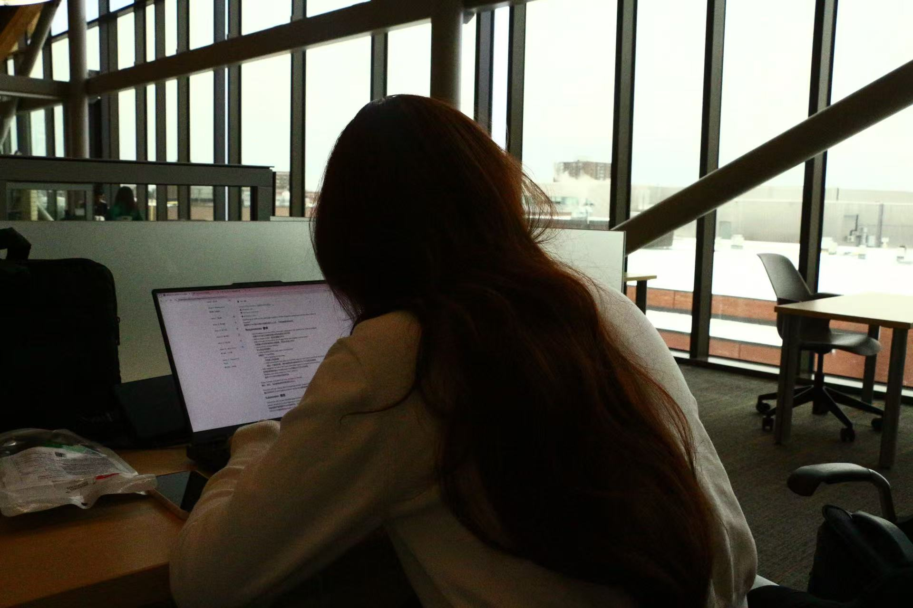

About Me
Hello! I'm Su Wenxi, a 19-year-old fresh high school graduate from China. I attended a regular high school where I developed a strong interest in technology and its impact on our world. Although I don't have any formal programming background, I'm fascinated by how coding can create solutions and shape our digital future. I arrived in Canada just a month ago to start my new academic journey at Algonquin College. This exciting transition has opened my eyes to new possibilities, and I'm eager to explore the world of programming through my studies.
As a newcomer to both Canada and the field of programming, I have clear goals for my time at Algonquin College. My primary objective is to successfully complete my program, which will not only provide me with valuable skills but also help me obtain a PGWP. Beyond academics, I'm excited to connect with like-minded individuals who share my passion for technology. I believe that building strong friendships and professional networks will be just as important as my coursework in shaping my future career path in the tech industry.